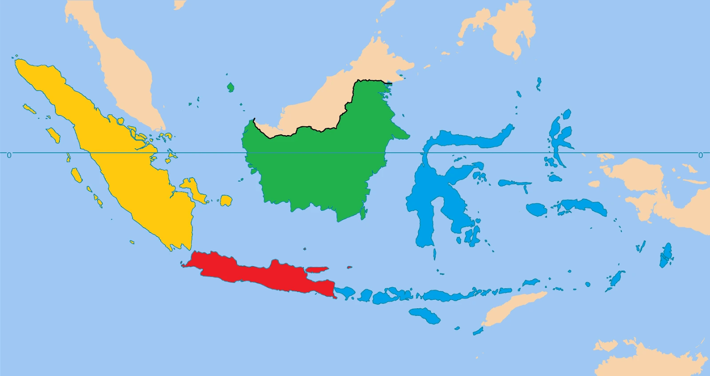

Dhani Kusuma
HOME
BIODATA
LIST-TUGAS
PETA
CONTACT
Kampus :
Global Institute
Nim : 1124160014
Nama : Dhani Kusuma Wardana Putra
Jurusan : Teknik Informatika
Semester : 2
Matakuliah : Perancangan Web
No
Tugas
Link Code
1
Tugas Membuat Web
https://github.com/DhaniKWP/1124160014-Tugas-01
2
Tugas latihan gambar
https://github.com/DhaniKWP/1124160014-latihan-gambar
3
Tugas membuat table
https://github.com/DhaniKWP/1124160014-latihan-day7

Klik disini untuk balik keatas